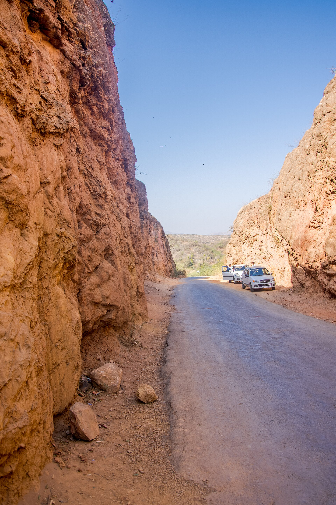
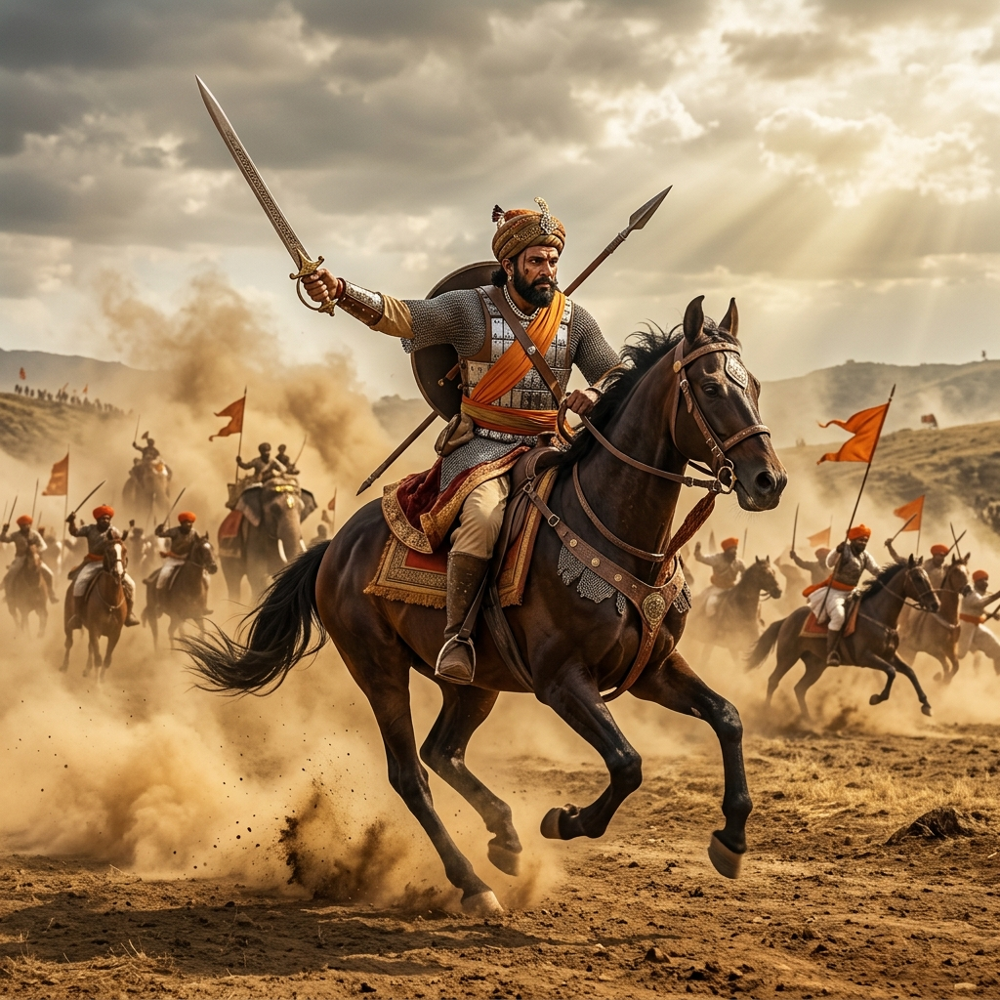

Battle of Wadgaon Explorer
Explore the historic pass of Talegaon-Wadgaon in the Western Ghats. Relive the First Anglo-Maratha War campaign where Mahadji Shinde's cavalry and scorched-earth strategies forced the British East India Company to capitulate.
The British March on Pune
Following the assassination of Peshwa Narayanrao in 1773, a regency council of Maratha ministers led by Nana Phadnavis established the infant Sawai Madhavrao as Peshwa. Raghunathrao (Raghoba), the uncle of Narayanrao, fled to Bombay and signed a treaty with the British East India Company to reinstate him.
In late 1778, a British force of 4,000 men marched from Bombay towards Pune. As they crossed the steep Western Ghats (Bhor Ghat), they were confronted by a united Maratha army of 50,000 soldiers mobilized under the command of Mahadji Shinde and Haripant Phadke.
🏛️ At a Glance
- Combatants: Maratha Empire vs. British East India Company (Bombay Presidency).
- Location: Wadgaon Maval, near Pune, Maharashtra.
- Outcome: Decisive Maratha victory.
- Significance: Capitation of Bombay Presidency forces and signing of the Treaty of Wadgaon.
Belligerents and Commanders
Explore the key commanders who shaped the mountain campaign of 1779.
Mahadji Shinde
The veteran Maratha general. He directed the scorched-earth strategy and guerrilla cavalry harassment that starved and trapped the British columns.
Nana Phadnavis
The chief minister and administrative brain of the Peshwa court, who united the Maratha chiefs against British intervention.
Lt. Col. Cockburn
The British military officer who took command of the retreating column at Wadgaon, realizing that escape was impossible.
📈 Tactical Innovations
- Scorched-Earth Strategy: Marathas burnt fields, poisoned wells, and destroyed food stocks in villages ahead of the British advance, starving them.
- Ganimi Kava (Guerrilla Cavalry): Constant hit-and-run cavalry charges led by Mahadji Shinde to break British columns.
- Mountain Encirclement: Trapping the British forces in the difficult mountain passes.
- Artillery Sniping: Deploying light cannons on hill tops to rain shellfire on the British retreat columns.
Guerrilla Cavalry and Scorched-Earth Strategy
Rather than engaging the British in a direct, open-field conflict, Mahadji Shinde utilized the rugged terrain of the Western Ghats. He implemented a scorched-earth strategy: burning the crops, poisoning wells, and evacuating villages on the route to Pune. The British advance column quickly ran out of food and water.
As the British forces began a desperate retreat from Talegaon in the dark, they were harassed by swift Maratha cavalry units executing *Ganimi Kava* (guerrilla tactics). Cut off from their rear guard and surrounded at Wadgaon, the British were forced to surrender.
The Treaty of Wadgaon
How the Maratha victory temporarily halted British expansion and restored the prestige of the Peshwas.
Surrender of Raghoba
The British surrendered Raghunathrao to the custody of Mahadji Shinde, ending the puppet succession dispute.
Territorial Restoration
The treaty forced the Bombay Presidency to cede all territories captured since 1773, including Salsette and parts of Gujarat.
Rise of Mahadji Shinde
The victory established Mahadji Shinde as the leading military general of northern and western India, initiating a period of Maratha resurgence.
Chronology of the 1779 Campaign
Follow the campaign events that marked the First Anglo-Maratha War climax.
British Advance
British forces under Colonel Egerton cross the Bhor Ghat and head toward Pune, meeting minor Maratha patrol opposition.
Scorched-Earth Trap
British reach Talegaon, only to find the village burnt and devoid of food. Starvation begins to set in.
The Retreat
British forces begin a night retreat toward Wadgaon, but are pursued and surrounded by Mahadji Shinde's cavalry.
Treaty of Wadgaon
Faced with destruction, the British sign the capitulation treaty, relinquishing Raghoba and territorial claims.
Relics of the Anglo-Maratha Conflict
Explore the Ghats landscape, Maratha cavalry, and historic treaties of the campaign.

Bhor Ghat Mountain Pass
The steep ghat passes where the British supply lines were severed.

Maratha Cavalry Maneuvers
The swift cavalry forces that executed the Ganimi Kava guerrilla tactics.

The Treaty of Wadgaon
Historic treaty documents representing the British capitulation.
📚 References & Further Reading
- Duff, James Grant (1826). A History of the Mahrattas (Volume II). Longmans.
- Gordon, Stewart (1993). The Marathas 1600-1818 (The New Cambridge History of India). Cambridge University Press.
- Sarkar, Sir Jadunath (1964). Fall of the Mughal Empire (Vol. III). M.C. Sarkar & Sons.
- Kulkarni, G.T. (1983). The First Anglo-Maratha War: Wadgaon Campaign. Deccan College.